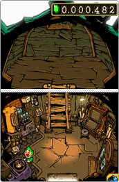
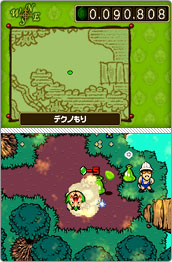
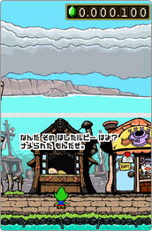
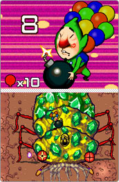

|
大量のルピーが降り積もる派手なタイトル画面を見て、「これはタダ者ではない」とドキドキしながらゲームスタート。冒頭で35歳のさえないオジサンが緑の全身タイツを着せられて、冒険の始まりです。ゲームの目的自体はルピー（ゲーム内のお金）をひたすら集めてルッピーランドと呼ばれる楽園をめざすシンプルなもの。このチンクルなのですが、始めて見たときは、表情といい仕草といい、憎らしくてたまりません。逆にそこがカワイイと感じるかというと決してそうでもなく（笑）。でも、その中途半端じゃない、一種突き抜けた演出がとても気持ちいいです。作り手側の“やるならとことん”という姿勢が最初から伝わってきます。イベントでのイエスかノーか選ぶ時のボタンからして、とんでもないセンスでデザインされています。個人的に好きなチンクルのアクションはダンジョンでタルなどを押すときかな（なんで手を使わずに腹で押すんだ？）。そんなチンクルではありますが、ストーリーを進めていくうちになんだか憎めなくなってしまうのだからフシギです。
チンクルが剣と盾を持って敵と華麗に戦うなんてもちろんあるはずもなく、フィールドでのバトルは巻き込み型とでも呼べるスタイル。往年のギャクマンガやアニメにあった、ドタバタとケンカを繰り広げる表現に使われていたアレ、巨大な煙が登場します。バトル中にチンクルのうめき声が聞こえてくるのがたまりません。フィールドのバトルでは多くの敵を煙に巻き込んでまとめて倒したほうが、手に入るアイテムの数や種類がグレードアップします。巻き込める時間には制限があるので、コツとしてはチンクルを見かけると近寄ってくるタイプの敵を引きつけながら、動かない敵に近づいてバトルを始めるのがポイント。ゲームが進んでくれば、アイテムでモンスターをおびき寄せたりとバトルの選択肢も拡がりますよ。そして手に入れたアイテムをそのままで、あるいは自宅のチンクルハウスで加工してタウンで売っていきます。こんな感じであの手この手でルピーを稼いでいくことになります。もちろん、タウンの住人もこのゲームの世界観にピッタリすぎるほどの個性派ぞろい。見かけだけじゃなく、その中身もチンクルに負けず劣らずのツワモノばかりです。 |
このゲームでは何をするにもルピーが必要です。というか、そういうことが身に染み付いた人達が住んでいる世界といえるでしょう。ここで注目したいのが情報やアイテムを仕入れる時に“定価”という存在がないこと。つまり、50ルピーぐらいの情報を45ルピーで買える場合もあるし、そこで200ルピー払ったらもっと有益な情報をプラスしてくれることもある。つまり支払うルピーにはプレイヤーの度量、相手を見極める力が試されているわけです。イベント解決時の相手のお礼も、こちらの言い値のルピーだったりします（あまり高く要求するともらえない！）。ゲーム内通貨のルピーとはいえ、油断するとお金を何度もムダに失うというこの新鮮な感覚、それにともなう妙にリアルな悔しさ、これがクセになってくるんですね。交渉後に聞ける各キャラの捨てゼリフも憎らしいものばかりですよ。
愛情を込めて“バカゲー”とも呼べるかもしれません。でも、プレイを進めるほどにシンプルに作られた遊びやすいシステムやひねりの効いた演出には感心するばかり。また、ゲームのボリュームも見た目のコミカルさとちがってなかなかのもの。全体的に簡単な操作で楽しめるRPGなのですが、各フィールドのダンジョンにいるボスキャラとの対戦時には本格的なアクションバトルも楽しめます。それからアイテム加工用の隠れレシピを探すことや、チンクルハウスの屋根裏が秘宝館と化するルッピーグッズ収集などのやりこみ要素もタップリです。最近のRPGって心地よい達成感を得ることはできるんですが、なかなか心の底から笑わせてくれる機会は少なかった。その点このゲームは、センスのある笑いが満載です。イベントでのメッセージ1つとってもユーモアと皮肉が息づいています。そのため電車内とかでプレイするときは注意してくださいね（笑）。チンクルのことをもっと知りたくなった人は任天堂公式HPにある同タイトルのページからチンクルハウスを覗いてみてください。このゲームが醸し出すノリを一部ではありますが確実に感じ取ることができると思いますよ。そしてこのノリが好きなら、ゲーム自体はもっともっと好きになれるはず。 |

|
|